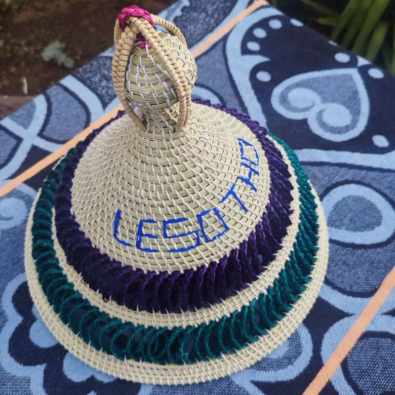
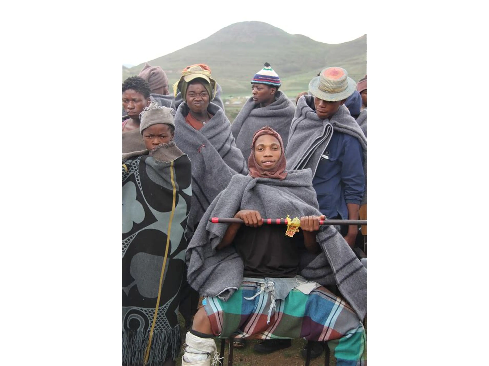

1. Mokorotlo Hats
Mokorotlo is a traditional Basotho hat, a conical, hand-woven straw hat that is a national symbol of Lesotho. Its distinctive shape is said to be inspired by Mount Qiloane, a mountain in Lesotho. The mokorotlo represents cultural identity, heritage, and unity for the Basotho people and appears on the national flag and currency, Read more.
2. Grey Wool Blankets
The Basotho gey wool blanket is a basotho traditional blanket worn mostly in winter by men or herd boys, or when going into the fields to herd animals, Read more
3. Lehlosi
A Chiefly blanket made of patterns from the skin of wild cat or leopards. At present, one will often observe chiefs wearing commercially manufactured blankets bearing the print of a leopard, rather than actual leopard skins, Read more